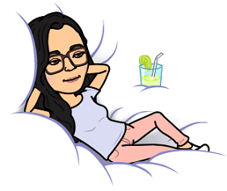

Hey there! I'm 汝平 (Ru-Ping), a UX Writer looking to use my Human-Centered Design background to get into Content Strategy.
This past summer, I did a Product Internship at Visualead, an IoT-company based in Shanghai that specializes in QR Code design. My UX Writing experiences with Visualead prompted a timely decision to focus my energies on pursuing a Content Strategy career. Thankfully, my background in journalistic and creative writing, along with HCD, have made the switch quite smooth.
In terms of personal goals, I'm currently documenting my family history, as a means to understand and learn more about my cultural roots and background. Additionally, I hope to publish more creative writing pieces related to Overseas Chinese experiences, specifically American-born Chinese and Overseas Chinese in Korea experiences.
Here are some other things I've done:
Feel free to contact me at rupingchn884@gmail.com!
